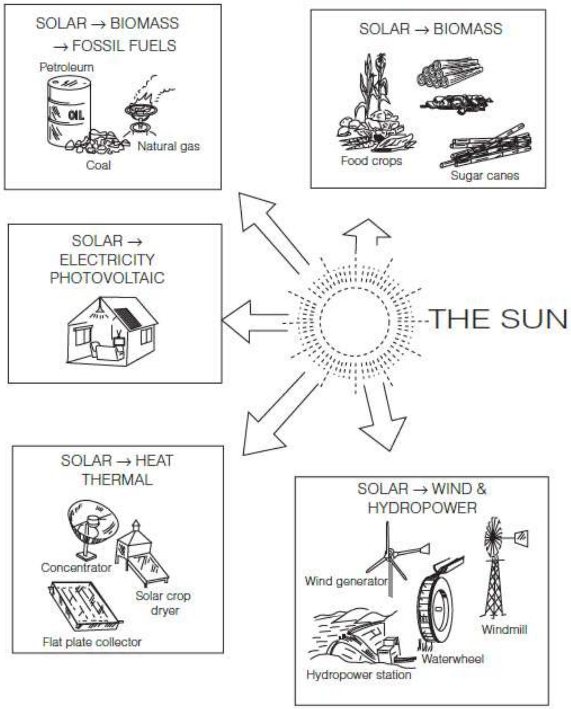

Converting Solar Energy (Chemical, Heat, Electrical)
CONVERTING SOLAR ENERGY
Sunshine has traditionally been used for drying all types of things: clothes, agricultural produce, cash crops and bricks - even in the production of salt from sea water. To make use of solar energy, we must convert it into useful forms. As shown, solar energy can be usefully transformed in three ways:
- solar energy to chemical energy;
- solar energy to heat energy;
- solar energy to electrical energy.
SOLAR ENERGY TO CHEMICAL ENERGY
Green plants transform solar energy to chemical energy in sugar and cellulose by the process of photosynthesis (all biomass contains chemically stored solar energy). Unfortunately, we have not yet developed a way to directly transform solar energy into chemical energy. Photosynthesis remains a secret of plants!
Photosynthesis is the process used by plants, algae, and certain bacteria to harness energy from sunlight and turn it into chemical energy.
- Photosynthesis is also used by algae to convert solar energy into chemical energy. Oxygen is liberated as a by-product and light is considered as a major factor to complete the process of photosynthesis.
- Photosynthesis occurs when plants use light energy to convert carbon dioxide and water into glucose and oxygen. Leaves contain microscopic cellular organelles known as chloroplasts.
SOLAR ENERGY TO HEAT ENERGY
Solar heating devices transform solar energy into heat that is used for drying, water-heating, space-heating, cooking and distilling water. CSP plants convert water to steam that is used to generate electricity. Solar thermal energy is most easily used in applications that require relatively small amounts of heat. The cheapest and simplest uses of solar energy (e.g. solar driers and water heaters) raise the temperature of air or water by $20-40^{\circ} \mathrm{C}\left(36-72^{\circ} \mathrm{F}\right)$. When more energy and higher temperatures are needed, solar energy must be concentrated, transported and/or stored, greatly increasing the cost and complexity of solar equipment needed. Solar energy to electrical energy.
SOLAR ENERGY TO ELECTRICAL ENERGY
Solar electric devices transform solar energy into electrical energy. This can be used to directly power electrical devices such as pumps and fans - or it can be stored in batteries to power lights, televisions, refrigerators and other appliances (these appliances are often used mainly at night when the sun has gone down).